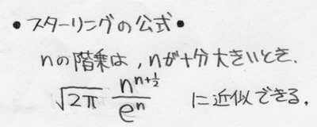

各問の配点も考慮して時間配分せよ。
極限値の計算に必要である場合、次の、ｎ！の近似式（スターリングの公式）を用いてよい。
近似の際には、左辺と右辺を等号で結んでよい。

注意： この試験問題において ^ はべき乗の記号であり、a^b は aのb乗を意味する。
得られた数値や式は、特に約分したり整理する必要はない。
１ （配点100点）
20項からなる数列をメモした紙がある。
an = ｛1,2,3,4,5,6,7,8,9,○,11,12,13,14,15,16,17,18,19,20｝
○の部分は紙が汚れていて見ることができない。
この数列の一般項 an （nは自然数）の定義域を実数全体に拡張し ｆ（n） （nは実数） と書くとすると、an=ｆ（n） は定義域全体に渡って連続であり、またnについてのただ一つの多項式で表されるものとして、以下の各問に答えよ。
問１）
関数ｆ(x)がx=aで連続であることの定義を書け。（15点）
問２）
○の値は一意に定まるか、定まらないか。答えだけ記せ。（5点）
問３）
問２の解答を証明せよ。
また、問２で定まるとした者は、 an の一般項を求めよ。
問２で定まらないと解答した者は、○の値がα（任意の実数定数）となるような an を求めよ。（80点）
２ （配点300点）
以下のようなゲームを行う。
・コインを投げて表が出たら1円もらう
・裏が出たら1円失う
資金0円からスタートして、資金が負になっても好きなだけ（やりたければ無限に）ゲームを続けることができるとする。
また、もし目標の金額がたまれば、即座にゲームをやめることができる。
例えば、ゲームを始めてから3回連続裏が出て、その次に1回表が出ると、資金は-2円になる。
これについて以下の各問に答えよ。
問１）
8回ゲームをするまでの間に、資金が一度も1円以上にならない確率を求めよ。8回より前にゲームを中断はしないものとする。（15点）
問２）
このゲームを資金0から開始した人は誰でも、いつか必ず（確率1で）資金を+1000000円にすることが可能であるか、不可能であるか。答えだけ記せ。途中であきらめてゲームを中断する場合や、ゲームにかかる時間は考慮しないものとする。（5点）
問３）
問２の解答を証明せよ。（200点）
問４）
問２の解答を、確率1/2で勝てるコインゲームではなく、勝率Ｐのゲームに拡張して論ぜよ。（80点）
３
白色のサイコロが3つと、黄色のサイコロが2つある。
また、サイコロがちょうど5個おさまる、図のようなハコがある。
図は、サイコロを適当に5つつめた状態である。

問１）
ハコ自体の方向を変えるたりひっくり返したりできないとして、このハコに5つサイコロをつめることを考える。
サイコロの回転によっても別の状態を表せるとする（図の2番目と3番目のような）。
ただし「1」「4」「5」は、デザインの都合で回転させても複数の状態を表すことができない。
ハコに5つサイコロをつめるとき、区別可能な状態は何通りあるか。
問２）
コインの裏表だけでこれと同じ数の区別可能な状態を作るとき、最低限必要なコインの枚数は何枚か。
問３）
円周率の近似値を計算したい。
使える道具・知識は以下の通りである。
・サイコロをランダムにハコに並べる試行
・その結果や回数を記録する紙と鉛筆
・円の面積の公式（面積＝半径×半径×円周率）
・直径と円周との関係（円周＝直径×円周率）
・円の方程式の一般形
・その他、図形や関数や微分積分・各種計算等の知識（ただし円周率そのものに関する知識・三角関数に関する知識は除く）
方法の概略を論理的に記せ（誤差などの細かい要素は無視してよい）。
問４）
なぜ上記方法で求めた近似円周率は実際の円周率と異なる値となるのか、その誤差を減らすためにはどうすればよいかを合理的に、ただし簡単に説明せよ（数式的な証明は不要である）。
以下は削除
３ （配点30点）
以下の各問に答えよ。
問１）xの方程式 ａx^2+bx+c=0 を解け。ただしa,b,cは実数定数とする。（10点）
問２）logａ^b ＝ bloga を証明せよ。ただしaは正の実数とする。（10点）
問３）ｎ角形の対角線の本数を導け。（10点）
問２）三角形の内角の和が180度であることを示せ。（10点） またｎ角形の内角の和を導き、nを用いて表せ。（10点）
問４）f(x)=x^x を微分せよ。（10点）